No audience-specific entry points
All visitors landed on the same homepage with no clear direction for their role.
Case Study
Redesigning New England's largest volunteer platform to serve individual volunteers, nonprofit partners, and corporate teams without losing any of them.
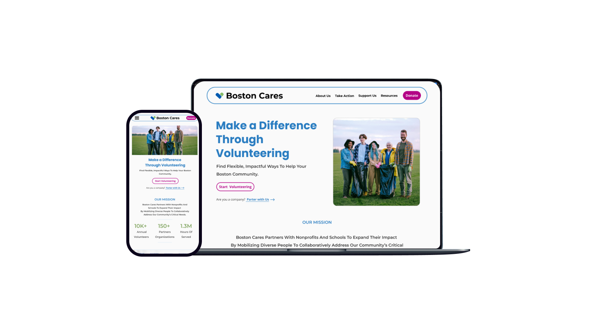
Boston Cares is New England's largest volunteer agency, connecting individuals, companies, and nonprofits through meaningful service opportunities.
Boston Cares connects 10,000+ annual volunteers with 150+ partner organizations, representing 1.3M hours of service. The mission was clear. The website was not.
The original site used one structure for three very different audiences: individual volunteers, corporate partners, and nonprofit organizations. Navigation was crowded, donation was buried, and volunteer listings were hard to search or scan.
All visitors landed on the same homepage with no clear direction for their role.
The donate action appeared inside a dropdown, invisible to top-level scanning.
Some navigation menus held 9+ sub-items with overlapping labels.
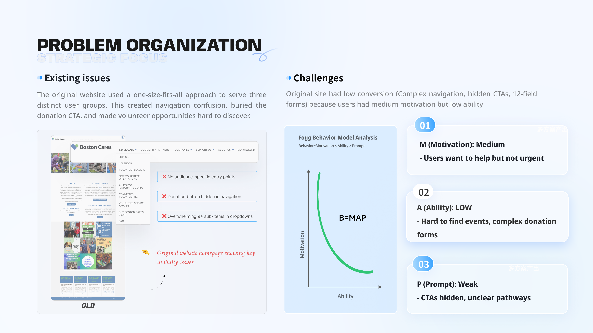
I compared Boston Cares with New York Cares, Chicago Cares, and VolunteerMatch across user segmentation, donation CTA visibility, mobile optimization, and visual hierarchy.
The gap was not Boston Cares' mission or content. It was the structural decisions that made action harder than intention.
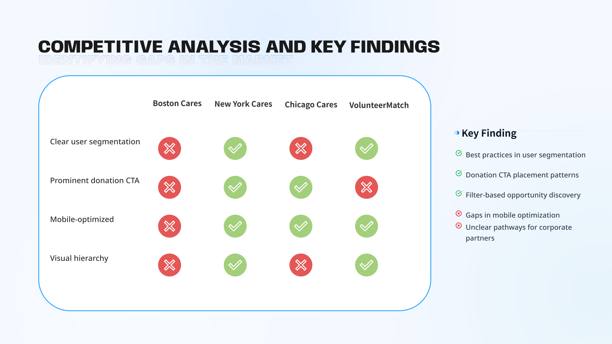
Research methods included heuristic evaluation, competitive analysis of 3 platforms, and user interviews with active Boston-area volunteers.
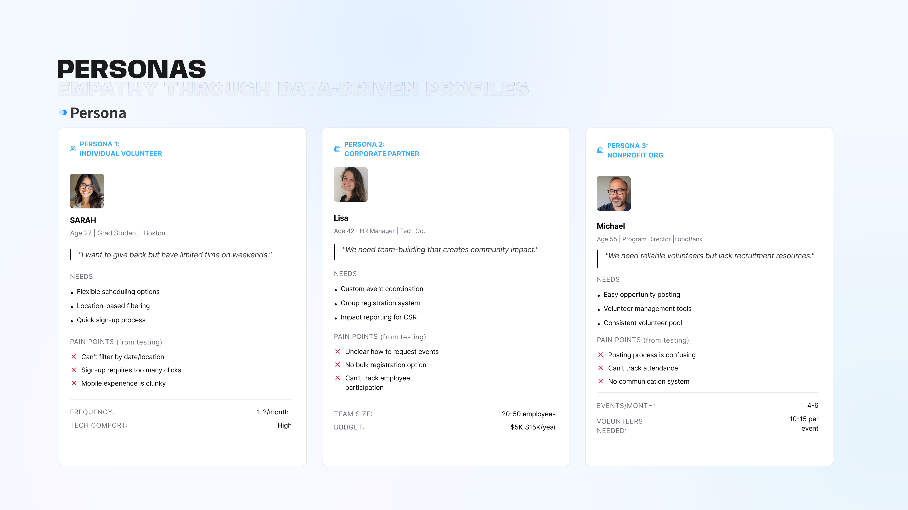
The new IA reduces 5 competing top-level menu areas into 4 clearer categories: About Us, Take Action, Support Us, and Resources.
"Take Action" becomes the unified hub for all participation types, reducing decision paralysis while still supporting individual, nonprofit, and corporate pathways.
Task-based top level, audience-based second level.
Information appears when relevant, not all at once.
"For Individuals", "For Nonprofits", and "For Companies" appear throughout.
One participation hub keeps the site easier to understand.
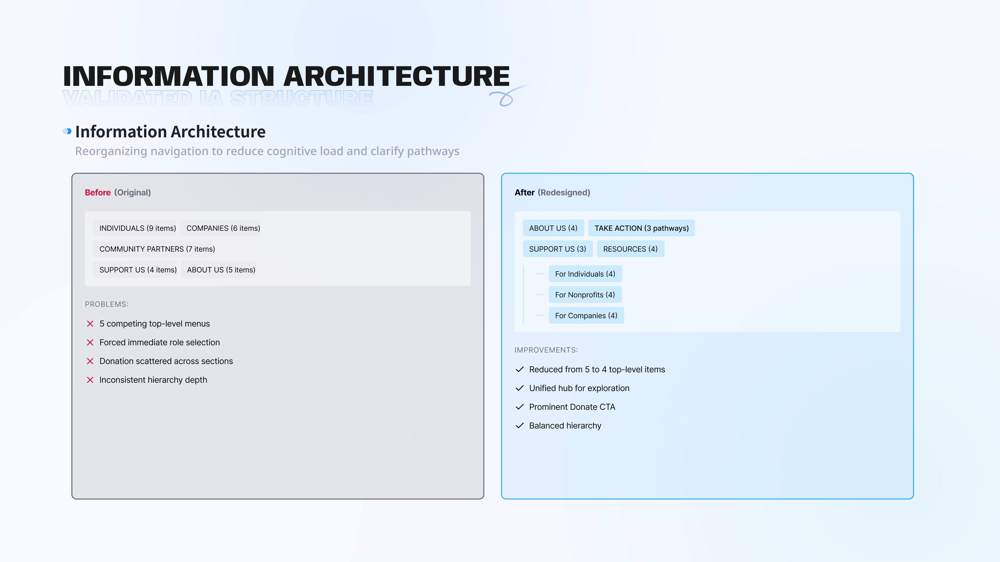
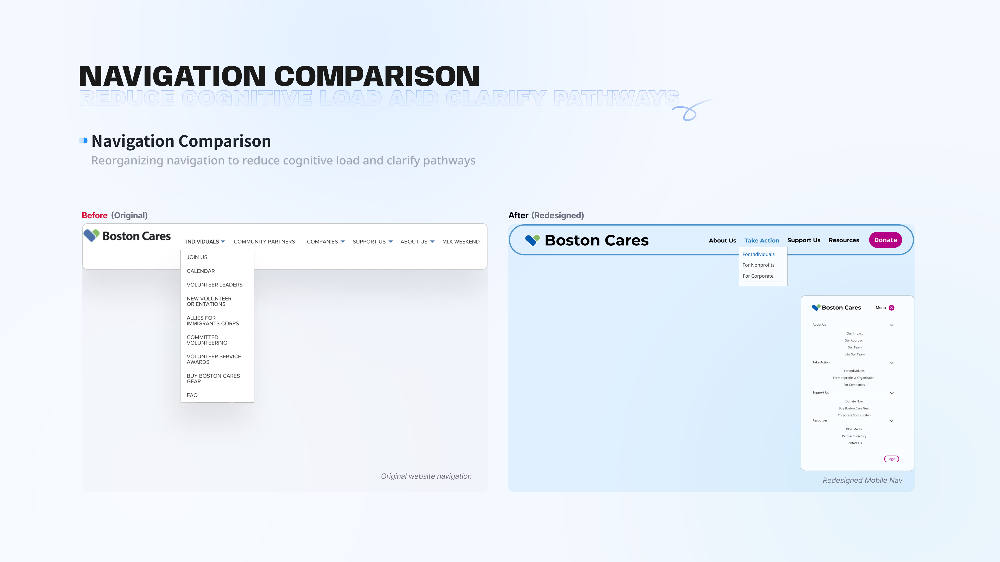
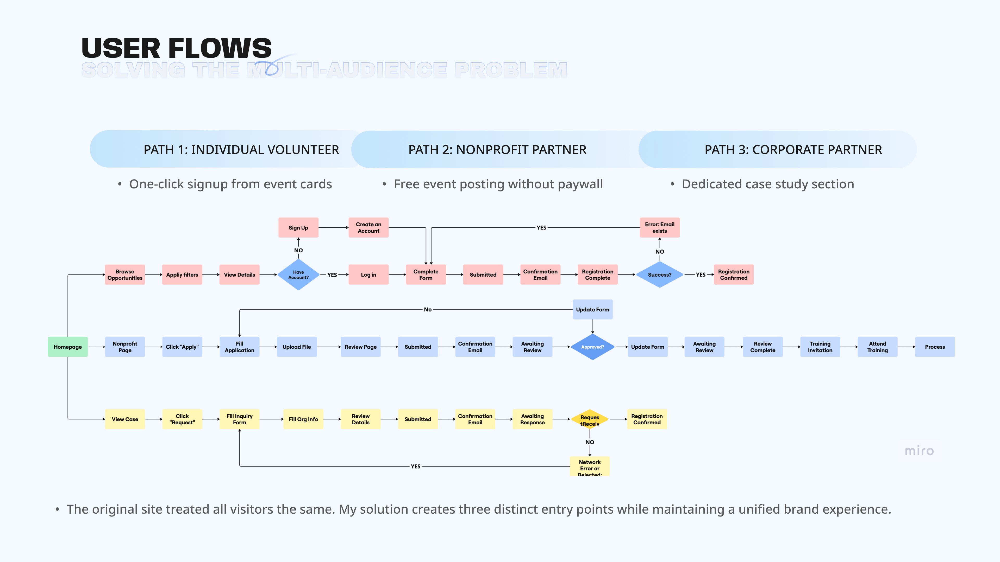
I used rapid prototyping to validate layout decisions early. The goal was to test information hierarchy with users before investing in high-fidelity visual design.
Explored where audience segmentation should appear.
Tested with 9 volunteers and added opportunity cards to the homepage.
Validated navigation, card layout, and donation flow with stakeholders.
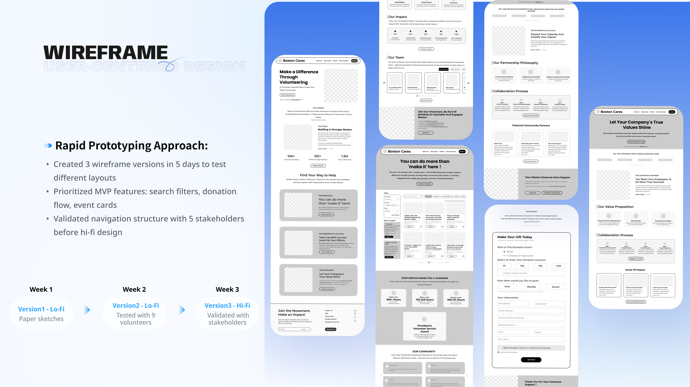
The homepage had one job: help each audience find the right starting point within seconds. Audience cards, persistent Donate CTA, and visible impact numbers create clear direction without making users read the whole page first.
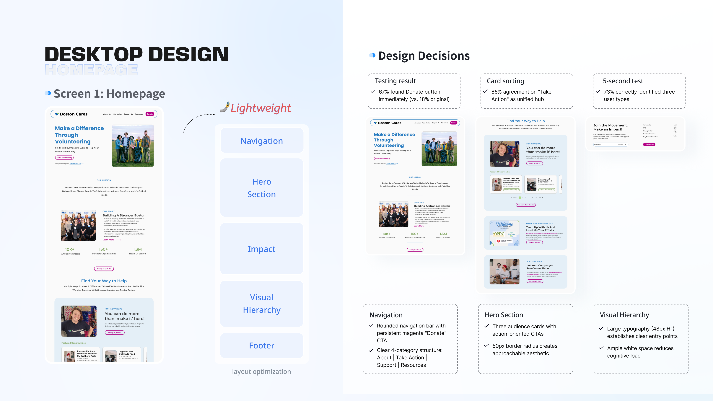
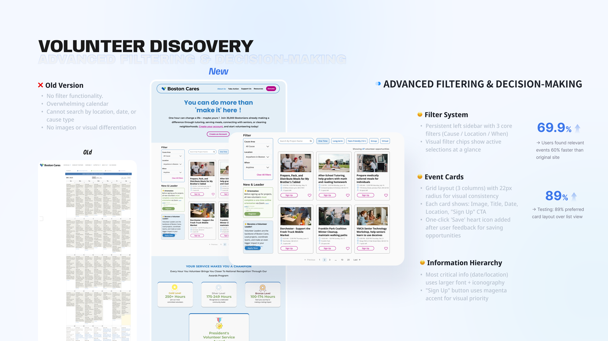
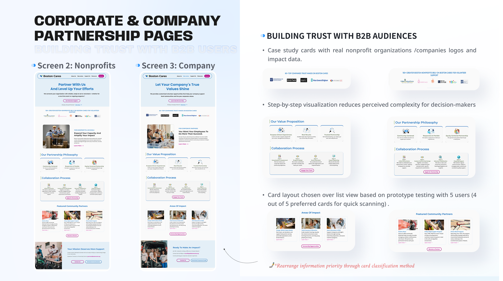
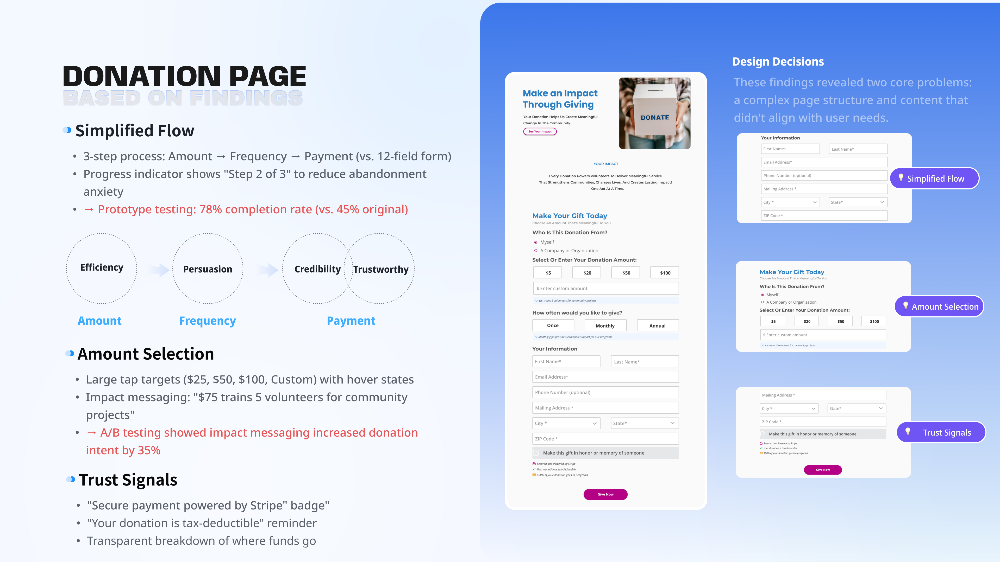
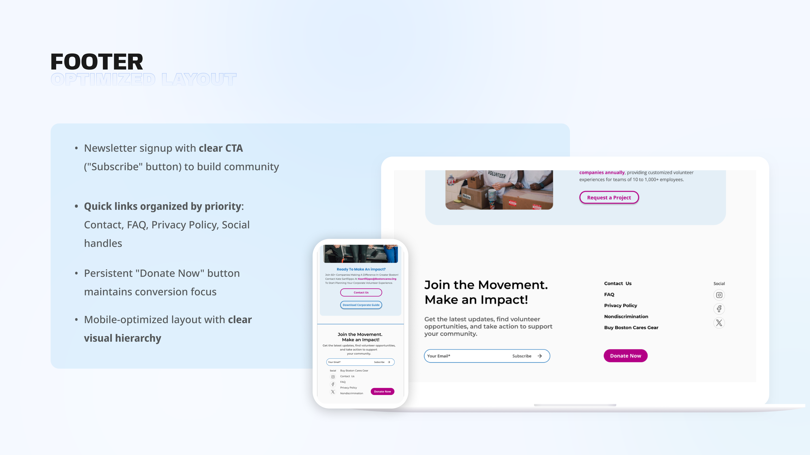
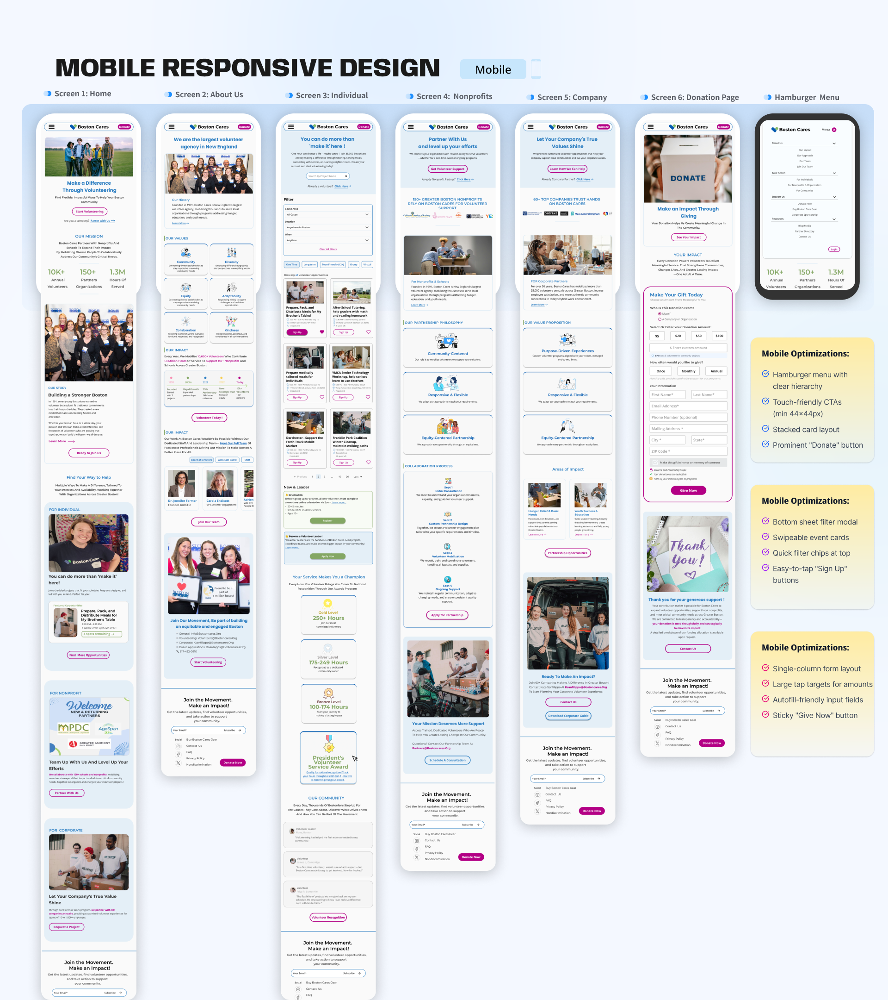
Blue supports credibility and accessibility for a platform asking people to give time and money. Magenta is reserved for donation CTAs so the highest-value action remains consistent and easy to locate.
Components were built in Figma with reusable states and auto layout: cards, buttons, form fields, filter chips, and tags.
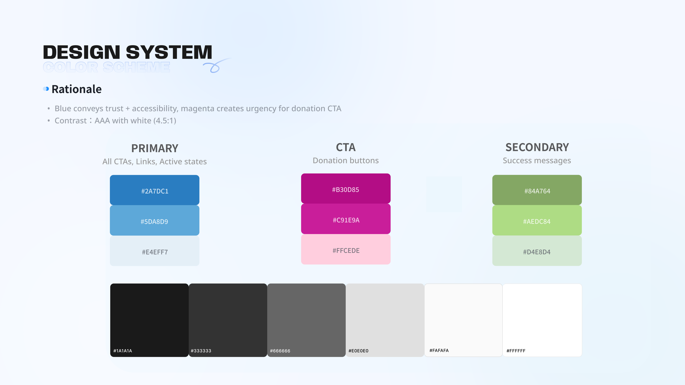
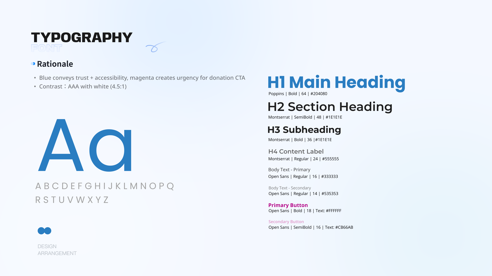
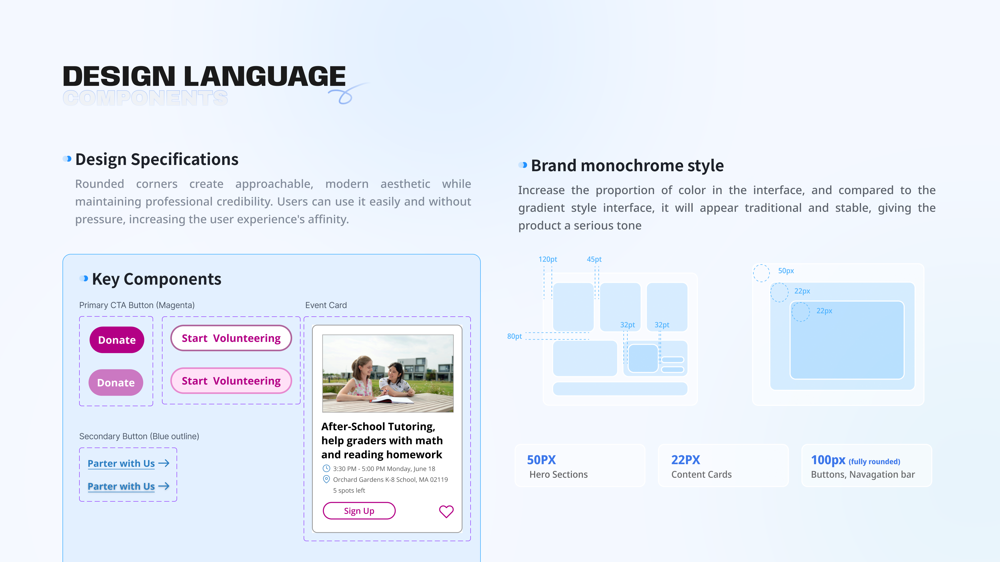
This was an academic redesign project. Testing was conducted through prototype walkthroughs and informal sessions, not live site analytics. The numbers reflect usability study findings, not production data.
The biggest shift was realizing this was not primarily a visual problem. When a volunteer gives up and searches Google instead, and an HR manager cannot tell whether the site is relevant to her company, the core issue is structure.
The redesign became stronger once the focus moved from visual polish to navigation and decision paths.
Individual, nonprofit, and corporate users needed separate flows without fragmenting the experience.
Donation and partnership pages needed proof, process, and reassurance at the moment users decide.